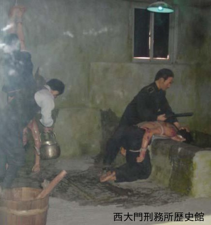
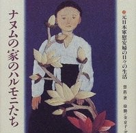
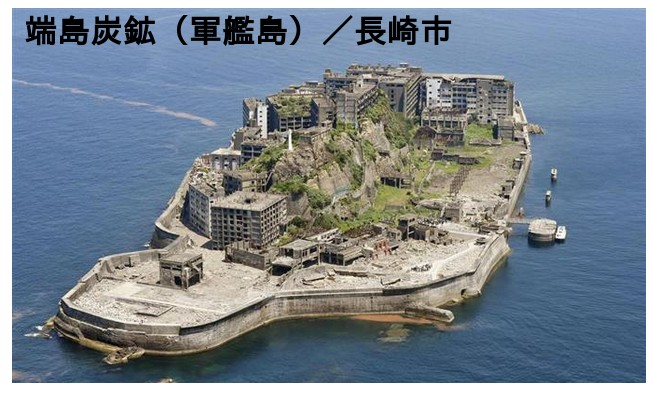
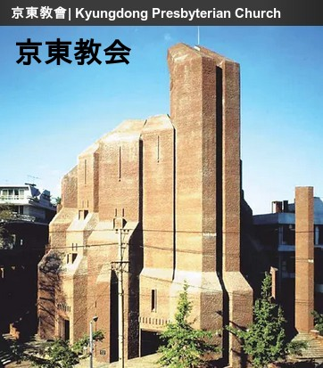

韓国・長崎・平和学習旅行から
今回自分は韓国、長崎に行きとても色々なことを感じ、考えた。 それは学校の教室で教わるような事となにか性質の違うものだったと思う。 実際に体験した話や場所等の、とても生々しく、時には目をおおいたくなる様な所で感じた事。 それは、数字や活字からは感じとる事の難しいものだったと思うし、普通に日本で暮らしてるかぎり、ほとんど体験する事は無かった事だろう。
この学習旅行で感じた事、考えた事は、ありすぎて、難しくて、頭の中でまとめるのが困難なぐらいだ。 でもこの旅行を完成させるためにも、体験をふり返りながら、考えをまとめてみようと思う。
自分が韓国で印象に残っている所の一つに西大門独立公園がある。
ここは一番はじめに来たせいもあるかもしれないがインパクトがあった。
当時のままに残された監獄や、死刑場、あと資料館は色々な意味ですごかった。

自分の感覚では、少なくとも若い人やカップルが、来る様な所ではない。
日本にあったら普段からあんなに人が来るだろうかと思うと、韓国の人々のこの事に対する意識がとっても高く、ふつうにこういうことに関心を持っているというのがすごいと思った。
しかし今度は逆に恐ろしくなってくる。
韓国の人みんなが、西大門刑務所であった事を知っているなら、決して日本人に良いイメージは無いだろう。
現に自分も、資料館を見て良いイメージは持てなかった。
多くの事を知っている韓国人と、この事に関してはほとんど知らない日本人、複雑に絡み合っている過去があったにもかかわらずどうして、こんなにも意識の違いが生まれてしまったのだろうか。
たしかに加害者、被害者、という立場の違いはあったが、この差は大きすぎる。 自分はこれを学校教育の違いだと思う。 詳しいところまでは、わからないが、韓国の教科書では、日本の植民地時代の事について何ページにも渡って書いてあったり、秀吉の朝鮮出兵についても大きくとり上げるなど、日韓の間にあった事について多くふれている。 しかし日本の場合、記述はしてあるもののあまり多くはふれられていない事が多い。 この差が、今の日韓の意識の違いを生み出していると思う。
自分は韓国に行く前、ビデオ等での事前学習の時、なぜ韓国では、あんなに日本を憎ませるような教育を行っているのかと思っていた。 しかしそれは少し違っていたようだ。 自分が思うに韓国の教育の根本は日本を憎ませる事ではなく、自分の国の過去にあった不当な扱いや、悲しい出来事を見る事で、こんな事が二度とあってはいけない、繰り返してはならないと言う事を言いたいんだと思う。 それに比べると、日本の義務教育は、日本が過去にどんな事をしたか知らせなさすぎると思う。
知らない事は、過去から学ぶ事、反省する事が少なくなるととても危険な事だと思う。
首相がいくら「過去の悲惨な出来事を遺憾に思う」と発言しても、実際に反省や再発を防ぐ対応をしなければ、結局は口先だけで、誠意など何処にもない事になる。
よく今の日本人に罪はないと言う人がいる。
しかし自分が思うに、罪を認めない事や知らない事じたいが罪なんではないだろうか。
何も知らずに、過去の事なんだから水に流そうなんて、今となっては言えたもんじゃない。
ありきたりだが、過去を見る事、見せる事で、繰り返すまいと感じる事が必要だと思う。
それにはまず、日本の政府が認め、教育を変える事が必要なんじゃないかと思ったりした。
次に自分がこの旅行で、とても強く印象に残ったナヌムの家の事を書こうと思う。

それとハルモニの話で悲しすぎるのは、元従軍慰安婦に対する差別が韓国内でもあった事だ。 戦争で苦しみ、それが終わっても自分の国の人から差別され苦しむなんて残酷すぎる話だ。 なぜ何の罪もない彼女達にこんな事をするのか、最も助けてあげなければいけない存在なのに、やりきれない思いだ。 こんな日本の欲のために少女の一生がこわされたかと思うと、日本の態度に腹が立つ。 そして日本の戦争補償が、まだまだという話を、聞いた。
今日本は、先進国として豊かになったが、現在の日本を考える時、過去東南アジア諸国を踏み台にしてきた事を忘れてはいけないと思う。 だからその時犠牲になった人を補償するのも当然の事だと思うし、またその時の侵略でその国々の発展を妨げたなら、その事からODAとかにもつながるんじゃないかなと思う。 結局は、悪かった事はちゃんと謝って、償う。 また繰り返さないようにする。 という最もわかりやすい姿勢を形にする事こそ今の日本に必要だと思った。
次に今回の旅行で思った戦争についての事を考えてみたい。 自分はなぜ戦争が起こったのかとか、どうすれば起らないかなどを考えてみた。
今回軍艦島に行って思った事だけど、戦争というのは利益をもとめ生まれた物ではないかという事だ。

方や一般国民は、共存共栄の世界を作るという表向きのスローガンにおされ、御国のためにと死んでいったり、苦労したりと、戦争をしてバカを見るのはいつも多くの一般国民だ。 よく日本の戦争は軍部が悪かったなんて言う人もいるけど、自分はそうは思わない。 当時の日本人みんなが戦争を招いたんじゃないか。 冷静な目で利益のための戦争はおかしいとか、軍に民主主義をうばわれたときに怒って声を上げるなど、もっとしっかり世の中を見ている人が多ければ、世の中違ったと思う。 それなのに当時は、冷静に見ている人は少なかったと思う。
いくら治安維持法や特高があっても、多くの人が問違っているという事に気がついて声を上げれば、戦争は止められたし、そこで止めなかったから、どんどん軍部が台頭していったんだと思う。 言ってみれば、国民が軍部の台頭をゆるし、育てていったと言ってもウソではないと思う。 だからみんなの本質を見る目がもっと必要だったと思う。 その点、浅川 巧 なんかは、とても本質を見ていたと思う。 世の中に流されなかった彼の考えはとてもすごいと思うし、今でも尊敬できるものだと思う。
自分の中では、京東教会での曺先生の話の一節が印象に残っている。

最後にこの旅行で矛盾に思った事を書こうと思う。
それは原爆記念館で思った事だ。
今まで原爆の被害は知ってはいたが、資料館を見て改めて驚いた。
また被害者の人の話からも、原爆は、人間を人間として存在させない恐ろしい兵器だということが伝わってきた。
自分が思うに、核兵器は、兵士だろうと一般人だろうと無差別に、また多量に殺し、その後50年以上たった今でも被害の爪痕を残す等、人道的、倫理的に見ても存在してはいけない兵器だと思う。
しかし原爆資料館では、トマホーク等を含め世界には七千発以上の核兵器があると言っていた。
そして一発落ちれば、広島の十倍ぐらいの被害は出ると言う。
そういう核兵器を今持っているのは、世界の超大国が中心だし、また近ごろ、インドやパキスタンあたりでも核実験があった。
なぜ今、持つことさえ許されないような兵器を、こぞって持とうとしているのか、核兵器の恐さ、悲惨さをみんな知っていて持っているならなんと不思議な事だ。
中には核がある事で世界の平和が保たれていると言う人もいるが、自分としては、核兵器があるという脅威に、絶えずさらされている事が平和だとは思えない。
被爆体験者の人も言っていたが核が無くならないかぎり、本当に安心できる世の中はこないと思う。
一日も早く核が無くなってほしい。
今回の旅行で自分は、色々なことを考えたと思う。 平和について、戦争についてほんの少しは分かったかもしれない。 たとえ分かっていなくても、それを分かろうとする事、考える事が大切なのは確かだ。 平和な世の中を考えるためにもしっかり世の中を見ていきたいと思う。
浅川 巧（あさかわ たくみ）荒れ果てた山々を緑で蘇らせ、失われゆく陶磁器や民芸に命を吹き込み、さらには現地の人々と同じ目線で生き抜いた彼の姿は、まさに「日韓をつないだ橋」。支配者としてではなく、ひとりの人間として朝鮮と向き合ったその生き様は、今なお日本と韓国の間で語り継がれています。
引用: レキシーズ／浅川巧 浅川巧の生涯：朝鮮民芸を愛した林業技師の軌跡